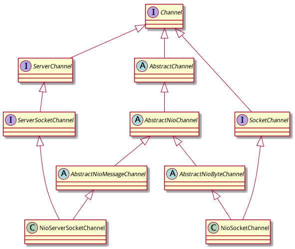

Channel 是netty中提供的对网络操作的抽象类,类似于NIO中的Channel (java.nio.SocketChannel/java.nio.ServerSocketChannel). Netty的javadoc中时这样描述的:
A nexus to a network socket or a component which is capable of I/O operations such as read, write, connect, and bind. 对网络套接字或者有I/O操作能力(例如读,写,连接和绑定)的模块的关联(抽象?)
channel为使用者提供的功能:
netty channel的一些注意事项:
所有的I/O操作都是异步的
netty中所有的I/O操作都是异步的. 这意味着任何I/O调用都将立即返回而不保证请求的I/O操作在调用结束时已经完成. 替代的是,你将得到一个返回的 ChannelFuture 实例, 当请求的I/O操作成功,失败或者取消时将通知你.
channel是有等级的(hierarchical)
channel可以有一个parent, 取决于它是如何创建的. 例如, SocketChannel 是 ServerSocketChannel 在接受连接时创建的. SocketChannel 的parent()方法就会返回这个ServerSocketChannel.
等级结构的语义取决于channel所属的 transport 的实现. 例如, 可以写一个新的Channel实现, 创建子channel用于分享一个socket连接, 像BEEP 和 SSH 那样.
向下溯型来访问传输特有(transport-specific)操作
某些transport 暴露transport特有的一些额外的操作. 将Channel向下溯型为子类型来调用这些操作. 例如, 对于老的I/O datagram transport, DatagramChannel 提供了 multicast join / leave 操作.
释放资源
有一个非常重要的事情, 当你完成channel的处理之后, 需要调用close() 或 close(ChannelPromise) 方法来释放所有的资源. 这样可以确保所有的资源以正确的方式被释放, 例如文件操作等.
Channel的子类非常多, 仅以最常用的nio为例, NioServerSocketChannel 和 NioSocketChannel 的继承结构如下:

在这个继承结构中, ServerChannel/ServerSocketChannel/SocketChannel 三个interface的内容都非常简单(ServerChannel甚至是空的), 主要内容还在几个abstract channel实现类.